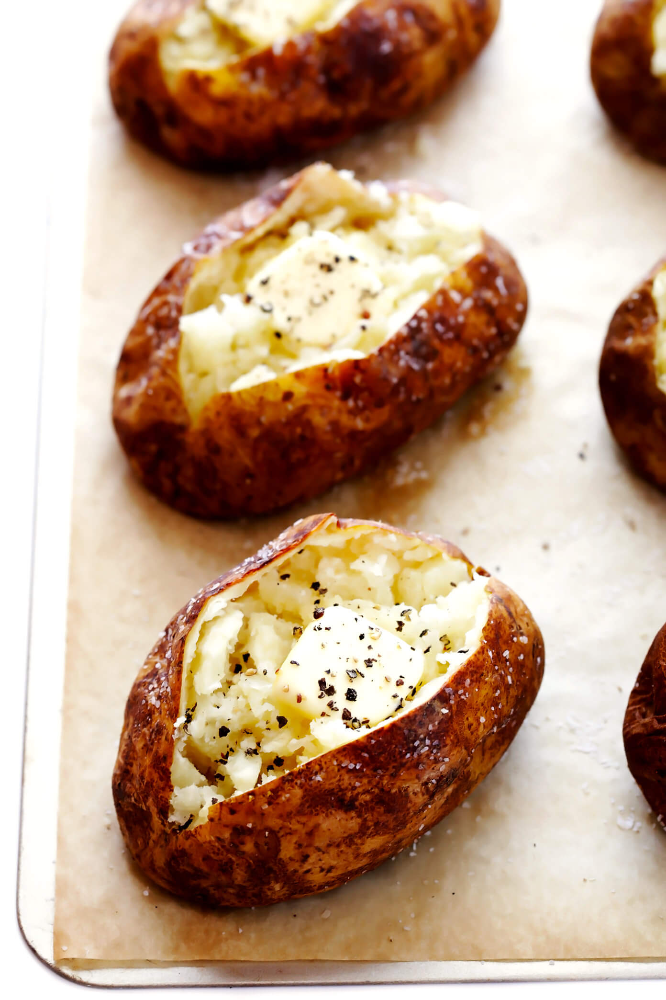

A Basic Baked Potato

Ingredients
- 1 potato per person
- Salt and pepper
- Butter (1 tbsp per person)
- Optional: sour cream
- Optional: green onions / chives
- Optional: bacon crumbles
- Optional: cheese
Instructions
- Preheat oven to 400 degrees
- Stab each potato several times with a pronged fork or thin pointy metal object. This prevents the potato from EXPLODING.
- Wrap the potato in tin foil and bake for 1 hour. If they are very large potatoes they may need 1.5 hours.
- Remove potato from oven.
- Once it is cool enough to handle, slice it open and add the butter, salt, and pepper to taste. Add any additional toppings you like as well.